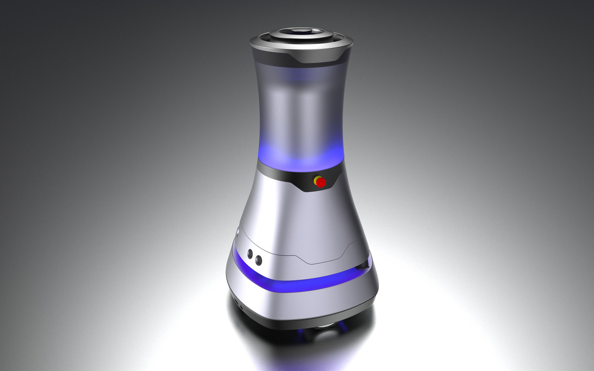
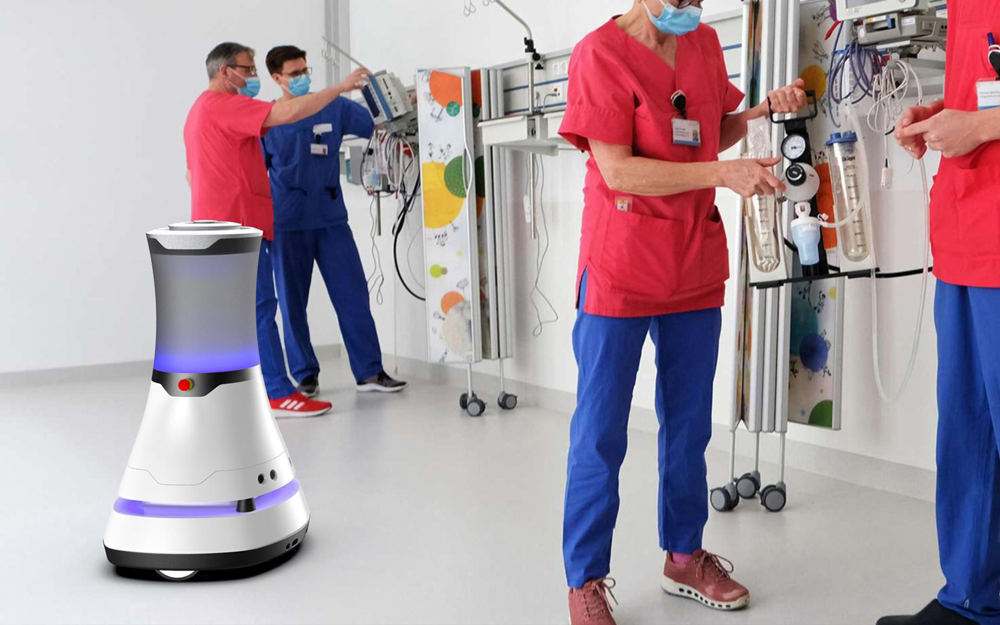
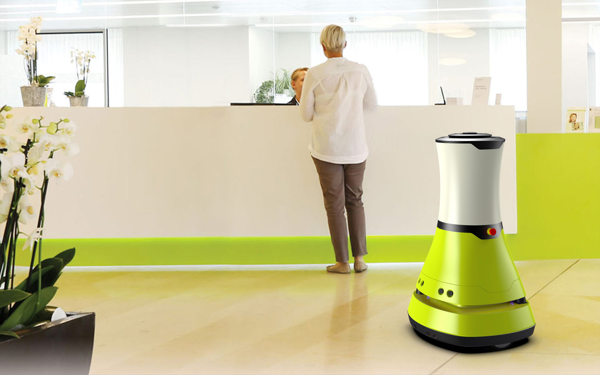
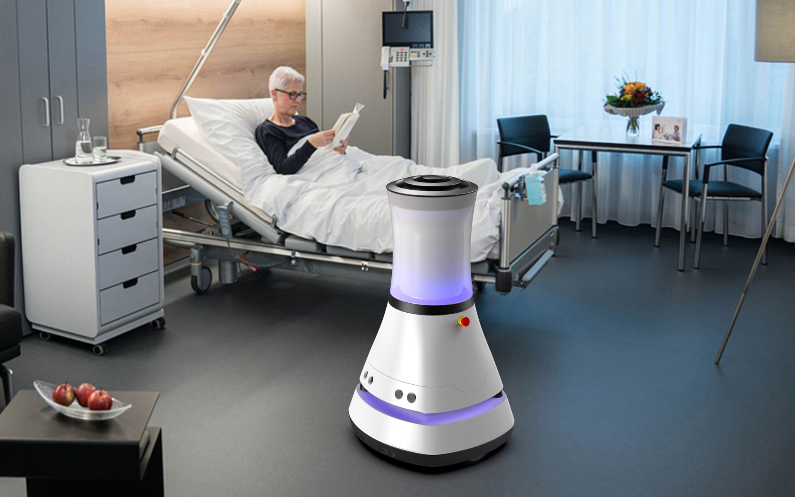
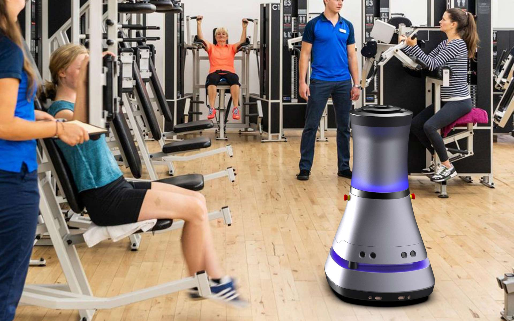
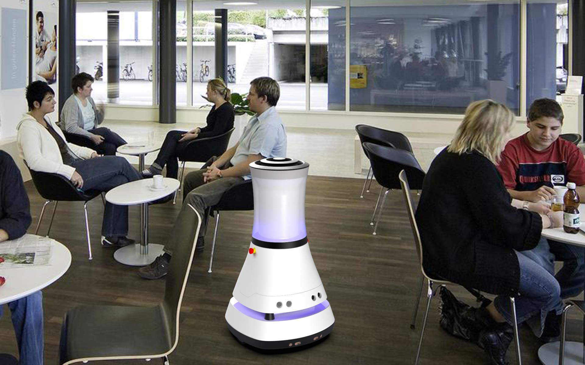

S.I.D. MDR
Mobile Disinfection Robot
S.I.D. MDR
Mobiler Desinfektionsroboter
The S.I.D. MDR is a patent-pending mobile disinfection robot that is used to effectively disinfect the air indoors up to larger rooms with a volume of up to 500 m3.
Its peculiarity is that during the disinfection process, the rooms and corridors do not have to be empty,
but the day-to-day operations are maintained as normal. For example, in a clinic, hospital operations with
nursing staff, doctors and patients are carried out without interruption. The S.I.D. MDR can also be used
optimally in open-plan offices, restaurants, shopping malls, gyms etc..
The concept: The germs are in the finest aerosols in the air and, due to their low weight, sink slowly
to the ground. If a person walks through a contaminated room, these germs are whirled up again due to
the very low mass. In order to keep the virus and germ load at the lowest possible level, an air stream
is passed vertically through the mobile disinfection robot and effectively disinfected inside the
device. The mobile robot drives through the rooms and corridors at a slow pace and continuously
disinfects the air. The mobile disinfection robot is almost maintenance-free and automatically drives to
a charging station to recharge the batteries. This robot is controlled via an app on common smartphones
or tablets.
The S.I.D. MDR is available in three equipment variants with similar disinfection effects:
MDR 01 with shielded UV-C lamps in the 250 nm range
MDR 02 with ionization tubes
MDR 03 with a nebulization chamber in which a solution of 75% ethanol and 25% water is nebulized.
The shielding of the UV-C lighting system prevents direct radiation in order to avoid consequential
damage to human health. All three variants have optional, external spray nozzles to additionally
disinfect the floor, the air and objects at intervals.
Der S.I.D. MDR ist ein zum Patent angemeldeter mobiler Desinfektionsroboter, der zum wirksamen Desinfizieren der Luft in Innenräumen bis hin zu größeren Sälen mit bis zu 500 m3 Volumen eingesetzt wird.
Seine Besonderheit ist, dass während des Desinfektionsvorgangs die Räume und Gänge nicht menschenleer
sein müssen, sondern der Betriebsalltag ganz normal aufrechterhalten wird. So kann z.B. in einer Klinik
der Betrieb mit Pflegepersonal, Ärzten und auch Patienten unterbrechungsfrei durchgeführt werden.
Auch in Großraumbüros, Restaurants, Shopping-Malls, Fitnessstudios usw. ist der S.I.D. MDR optimal
einsetzbar. Das Konzept: Die Keime befinden sich in feinsten Aerosolen in der Luft und sinken nur
langsam zu Boden. Läuft eine Person durch einen kontaminierten Raum, werden diese Keime aufgrund der
sehr geringen Masse wieder aufgewirbelt. Um die Viren- und Keimbelastung auf möglichst geringem Niveau
zu halten, wird ein Luftstrom vertikal durch den mobilen Desinfektionsroboter geleitet und im
Geräteinneren wirksam desinfiziert. Der mobile Roboter fährt gezielt die Räume und Gänge im langsamen
Schritttempo ab und entkeimt fortlaufend die Luft. Der mobile Desinfektionsroboter ist nahezu
wartungsfrei und fährt automatisiert zum Nachladen der Akkus gezielt eine Ladestation an. Gesteuert wird
dieser Roboter per App auf gängigen Smartphones oder Tablets.
Der S.I.D. MDR wird in drei Ausstattungsvarianten angeboten:
S.I.D. MDR 01 mit abgeschirmten UV-C-Strahlern im 250 nm - Bereich
S.I.D. MDR 02 mit Ionisationsröhren
S.I.D. MDR 03 mit einer Vernebelungskammer, in der eine Lösung aus 75% Ethanol und 25% Wasser zerstäubt
wird.
Die Abschirmung der UV-C-Lichtanlage verhindert die direkte Abstrahlung, um gesundheitliche Folgeschäden
an Menschen zu vermeiden. Alle drei Varianten besitzen optionale, äußere Besprühungsdüsen, um gezielt
den Boden in Intervallen zusätzlich zu desinfizieren.






Images © Selić Industriedesign